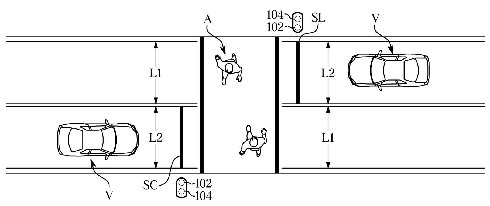
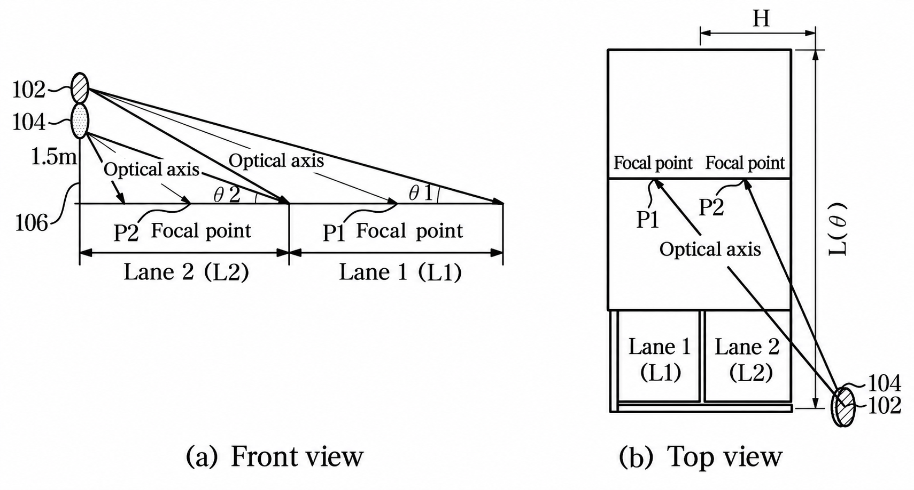
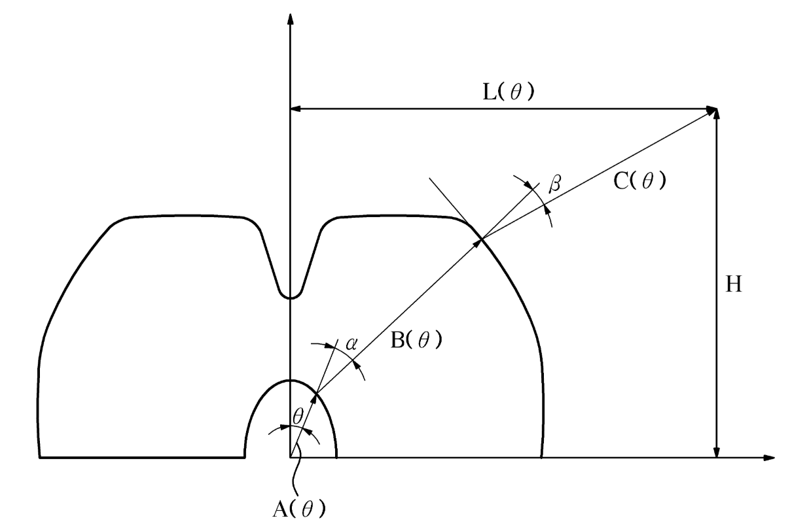
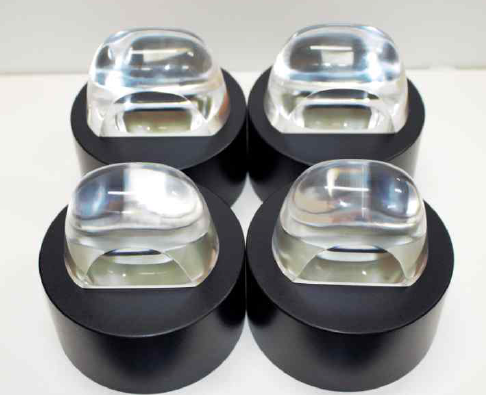
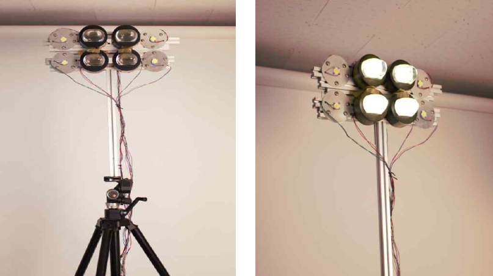

Republic of Korea Patent No. 10-2263981 · KR102263981B1
Co-inventor of a crosswalk-lighting system designed to make pedestrians more visible to approaching drivers at night.
Design idea
Two vertically separated lamps share a pole near the stop line. Each lamp targets the midpoint of a different lane, increasing illumination on pedestrians’ vertical surfaces and their contrast against the background.


Enlarge image ⤢Geometry and optics
The patent specifies a 1.5 m pole and lane-directed angles of 20.95° and 10.80°. Lens-surface design shapes light toward the lane targets while limiting glare toward opposing traffic.


Enlarge image ⤢Lens design and prototype
Project photographs document lens samples and an assembled lighting prototype.


Enlarge image ⤢

Enlarge image ⤢

Enlarge image ⤢Evaluation
The document compares simulated vertical illuminance as pole height and placement vary. These simulations support the proposed lighting geometry.
Technical description: Korean Patent KR102263981B1. Drawings and project photographs supplied by the author; Korean diagram annotations translated into English.
View patent on Google Patents